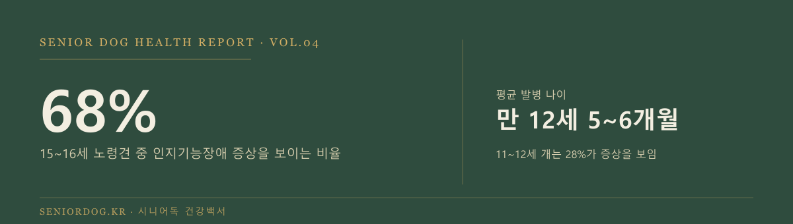
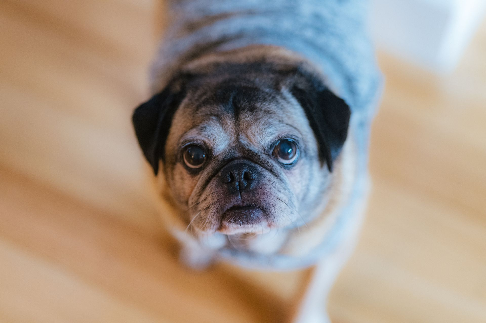
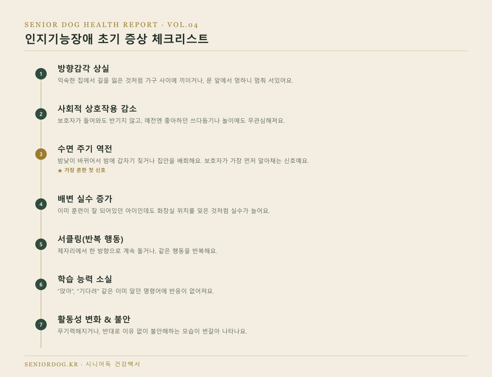
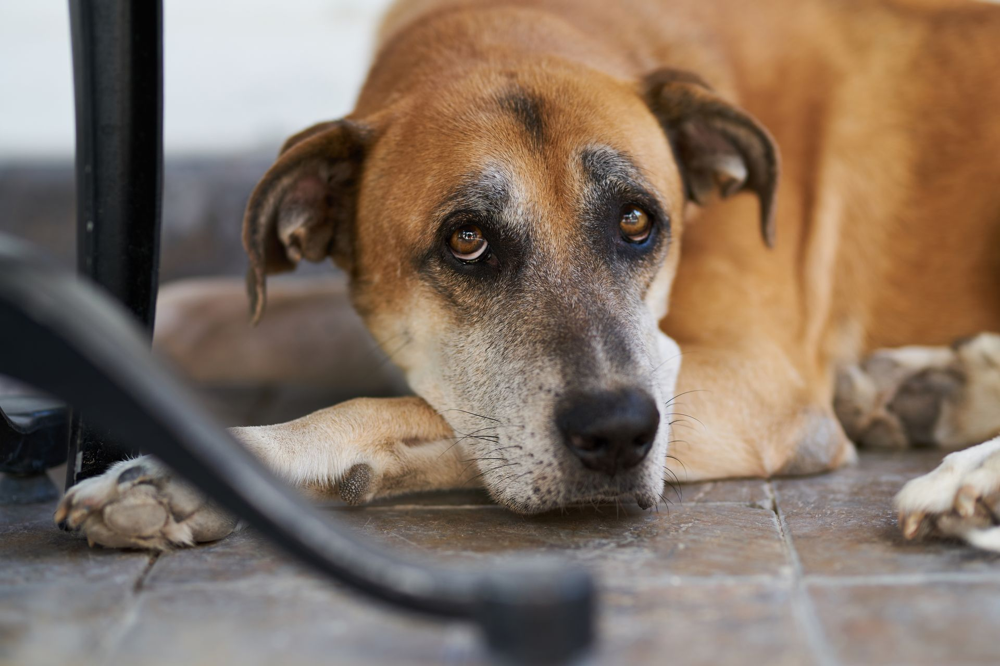
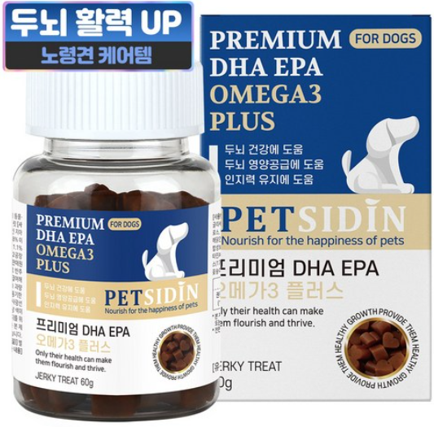
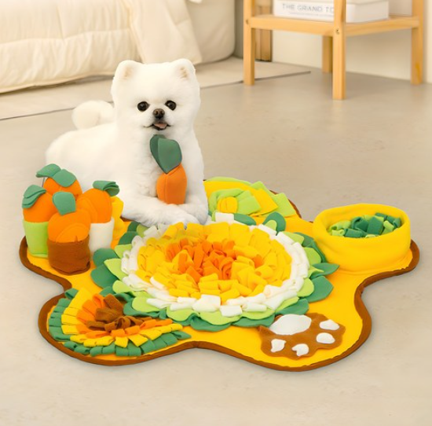

노령견 강아지 치매(인지기능장애)
초기 증상 7가지, 우리 아이도?
15~16세 노령견 10마리 중 7마리가 인지기능장애 증상을 보인다는 연구 결과가 있어요. 남 일이 아니에요. 오늘은 정확히 어떤 증상부터 나타나는지, 나타났을 때 뭘 해야 하는지 확실하게 정리해드릴게요.


· 노령견 치매(인지기능장애증후군)의 평균 발병 나이는 만 12세 5~6개월이에요.
· 11~12세 개의 28%, 15~16세 개의 68%가 인지기능장애 증상을 보인다는 연구 결과가 있어요.
· 완치는 안 되지만, 조기에 발견하면 진행 속도를 확실히 늦출 수 있어요. 그래서 초기 증상을 아는 게 중요해요.
- 노령견 치매, 얼마나 흔한가
- 초기 증상 7가지 체크리스트
- 병원에서는 어떻게 진단하나
- 관리 방법 — 영양제·환경·자극
- 추천 제품
- FAQ
노령견 치매, 얼마나 흔한가
노령견 치매는 정식 명칭이 인지기능장애증후군(CDS)이에요. 사람의 알츠하이머와 비슷하게 뇌 기능이 저하되면서 생기는 신경학적 질환이고, 평균 발병 나이는 만 12세 5~6개월이에요. 연구에 따르면 11~12세 개의 28%, 15~16세 개의 68%가 인지기능장애 증상을 보여요. 나이가 들수록 확률이 가파르게 올라가는 질환이라, “아직 우리 아이는 괜찮겠지”라고 넘기기보다는 지금부터 신호를 알아두는 게 맞아요.
초기 증상 7가지 체크리스트
아래 중 2~3개 이상 해당되면 미루지 말고 병원 방문부터 하세요.

- 방향감각 상실 — 익숙한 집에서 길을 잃은 것처럼 가구 사이에 끼이거나, 문 앞에서 멍하니 멈춰 서있어요.
- 사회적 상호작용 감소 — 보호자가 들어와도 반기지 않고, 예전엔 좋아하던 쓰다듬기나 놀이에도 무관심해져요.
- 수면 주기 역전 — 밤낮이 바뀌어서 밤에 갑자기 짖거나 집안을 배회해요. 이게 보호자가 가장 먼저 알아채는 신호예요.
- 배변 실수 — 이미 훈련이 잘 되어있던 아이인데도 화장실 위치를 잊은 것처럼 실수가 늘어요.
- 서클링(반복 행동) — 제자리에서 한 방향으로 계속 돌거나, 같은 행동을 반복해요.
- 학습 능력 소실 — “앉아”, “기다려” 같은 이미 알던 명령어에 반응이 없어져요.
- 활동성 변화와 불안 — 무기력해지거나, 반대로 이유 없이 불안해하는 모습이 번갈아 나타나요.
병원에서는 어떻게 진단하나
정직하게 말씀드리면, 치매를 “이 검사 하나로 확진”하는 방법은 없어요. 수의사가 혈액검사·영상검사로 다른 질환(종양, 신장질환, 갑상선 이상 등)을 먼저 배제하고, 위 7가지 증상 패턴과 보호자가 관찰한 행동 변화를 종합해서 진단해요. 그래서 병원 가기 전에 언제부터, 어떤 행동이, 얼마나 자주 나타났는지 메모해가시면 진단이 훨씬 정확해져요.

관리 방법 — 영양제·환경·자극
영양제 & 사료
오메가3(DHA·EPA), 항산화 성분이 들어간 인지기능 보조제나 치매 예방용 처방사료가 도움이 돼요. 완치 목적이 아니라 진행 속도를 늦추는 목적이라는 걸 기억하세요.
환경 관리
가구 배치를 자주 바꾸지 마세요 — 방향감각을 잃은 아이한테는 오히려 혼란을 줘요. 미끄럼 방지 매트를 깔고, 밤에는 은은한 조명을 켜두면 야간 배회로 인한 부상을 줄일 수 있어요.
인지 자극
노즈워크, 퍼즐 장난감, 새로운 명령어 학습처럼 뇌를 계속 써야 하는 활동이 실제로 예방·관리에 도움이 된다고 알려져 있어요. 규칙적인 산책과 생활 패턴 유지도 중요해요.
추천 제품

강아지 인지기능 영양제 (DHA·오메가3)
뇌 건강에 도움을 주는 DHA·EPA, 항산화 성분 위주의 영양제예요. 진단 전이라도 예방 차원에서 미리 시작하는 보호자들이 많아요.
펫시딘 강아지 DHA EPA 오메가3 두뇌 건강 영양제 ↗
강아지 노즈워크 매트 (두뇌 자극용)
코를 이용해 간식을 찾는 활동으로 인지 자극을 줄 수 있는 매트예요. 하루 10~15분만 활용해도 좋은 인지 자극 루틴이 돼요.
레토 강아지 플라워 당근밭 담요 매트 노즈워크 장난감 ↗자주 묻는 질문
Q. 노령견 치매는 완치되나요?
A. 완치는 안 돼요. 다만 조기에 발견해서 영양제·환경관리·인지자극을 병행하면 진행 속도를 확실히 늦출 수 있어요. 그래서 초기 증상을 빨리 알아채는 게 제일 중요해요.
Q. 서클링(제자리 돌기)이 꼭 치매 신호인가요?
A. 아니에요. 관절 통증이나 다른 신경학적 문제로도 비슷한 행동이 나올 수 있어요. 다른 증상과 같이 나타나는지 보고, 병원에서 정확히 감별받으세요.
Q. 예방할 방법이 있나요?
A. 100% 예방은 안 되지만, 규칙적인 운동과 노즈워크·퍼즐 같은 인지 자극, 항산화 성분이 든 식단이 발병을 늦추는 데 도움이 된다고 알려져 있어요. 젊을 때부터 미리 습관 들이는 게 좋아요.
다음 글
다음 글에서는 노령견 사료 전환, 설사 없이 안전하게 바꾸는 법을 다룹니다.